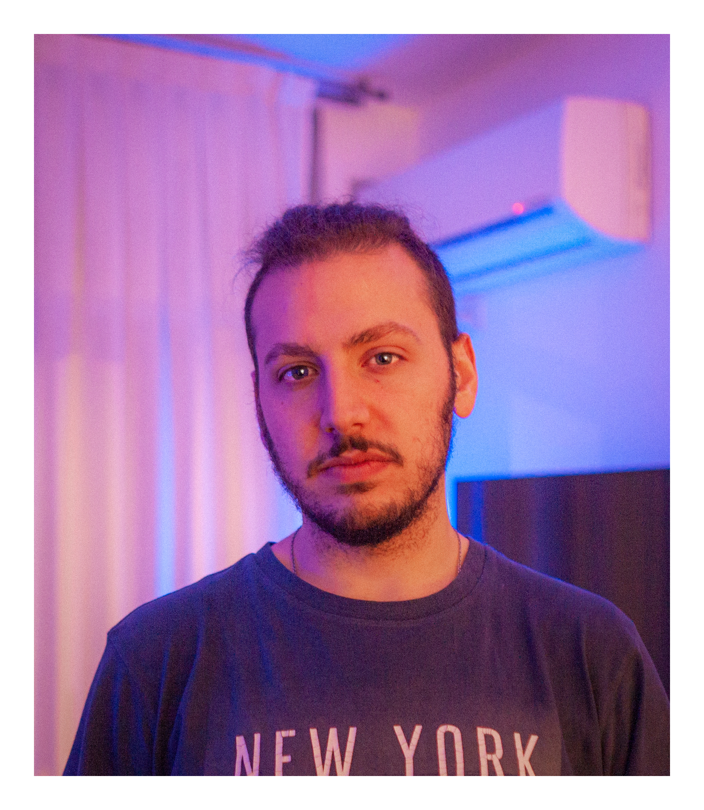

Lucas Barral
Fotografía Analógica
Soy nacido en Avellaneda y tengo 24 años. Comencé a estudiar fotografía por mi cuenta desde que tengo 17 por lo que llevo 7 años novegando el mundillo del arte de la luz.
TOMAS CONCIENTES. Es muy sencillo hacerse de 300 fotos compartiendo un almuerzo con amigos en el caso de tener una cámara digital. Si bien es la primera que compré y la que me introdujo en esto, es necesario para un fotógrafo comenzar por los inicios y entender cómo funciona realmente esto: la importancia de medir la luz, de saber esperar, planificar una toma y adueñarse del proceso creativo de pensar, preparar y tomar la imagen. La fotografía analógica acepta muchos menos errores que la digital.
Si te interesa saber más, te dejo a continuación la lista de cámaras y lentes que poseo y uso:
- Zenit 12XP con Zenit M-44 58mm f/2.0
- Konica MT100
- Canon SureShot del Sol
- Goodman Zone 6x7 con Mamiya Universal Press 127mm f/4.7
- Kodak Brownie 620
